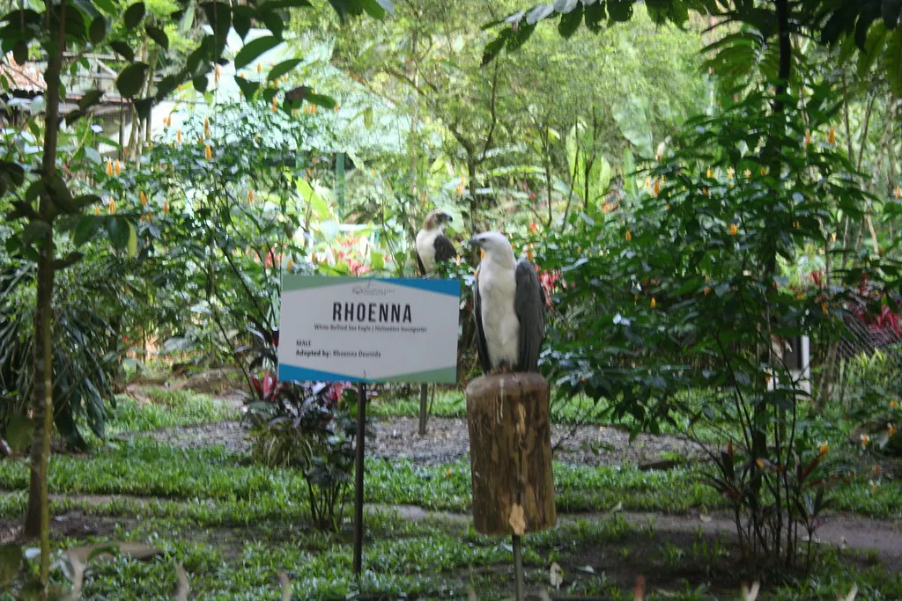

Eagle Center Highlights



The Philippine Eagle Center was established to protect and conserve the Philippine Eagle, one of the rarest and most powerful birds of prey in the world. Located in Davao City, the center covers a lush and forested area that replicates the eagle's natural habitat. It is managed by the Philippine Eagle Foundation, a non-government organization dedicated to wildlife protection.
Aside from the Philippine Eagle, the center also houses other animals such as deer, monkeys, and reptiles. Visitors can walk along shaded trails and observe these animals in enclosures that prioritize their welfare and natural behavior. Informational displays throughout the center offer insights into the lives of these creatures and the threats they face.
The center plays a vital role in educating the public about biodiversity and environmental preservation. It is a favorite spot for students, nature lovers, and tourists who want to see the national bird up close. By visiting, tourists also support conservation efforts that help ensure the survival of these majestic eagles.